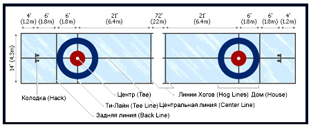

Правила игры
Правила вида спорта "кёрлинг" (утв. приказом Минспорта России № 1091 от 21.12.2017)(.pdf)
Карта игровой площадки

Основные элементы
Бросок камня

Спортсмен ставит ногу на стартовую колодку, сгибает корпус и готовится к броску. Затем кёрлер толкается вперёд и вниз, перемещает вес тела на переднюю ногу, вытягивает руку вперёд, плавно направляя камень к дому. Приведя камень в движение, спортсмен скользит за ним, контролируя движение.
Свипинг

Кёрлеры трут лёд перед камнем, чтобы немного растопить поверхность площадки и направить снаряд.